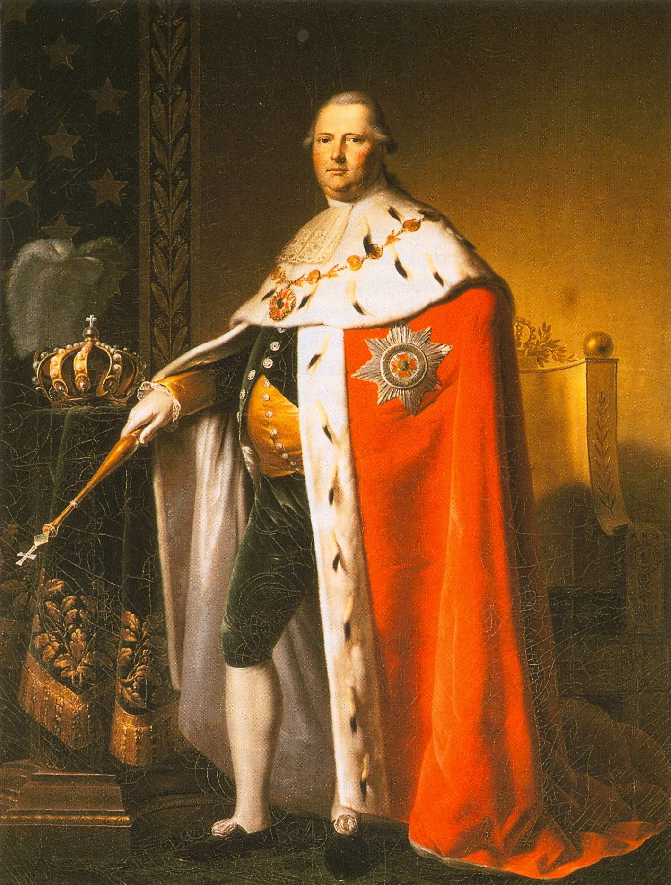
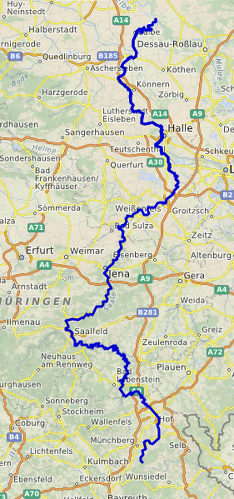
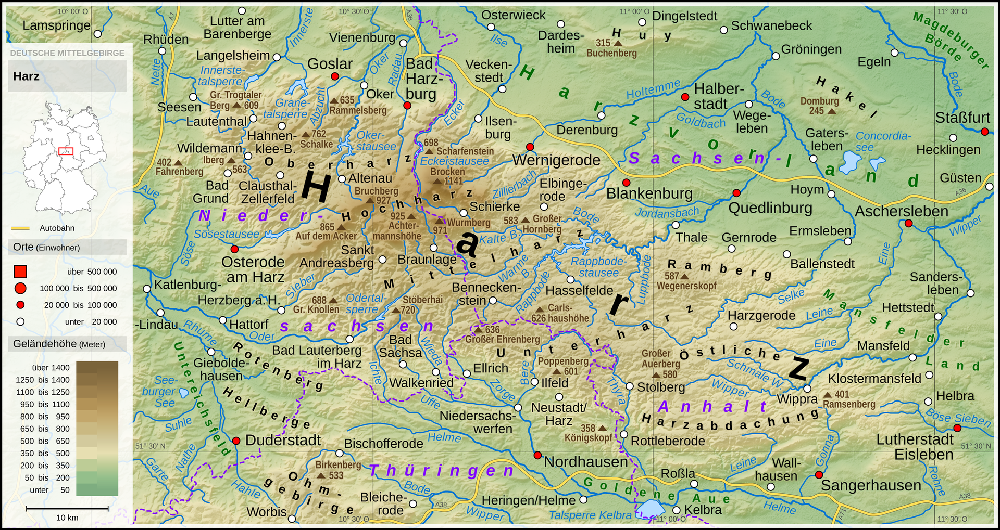
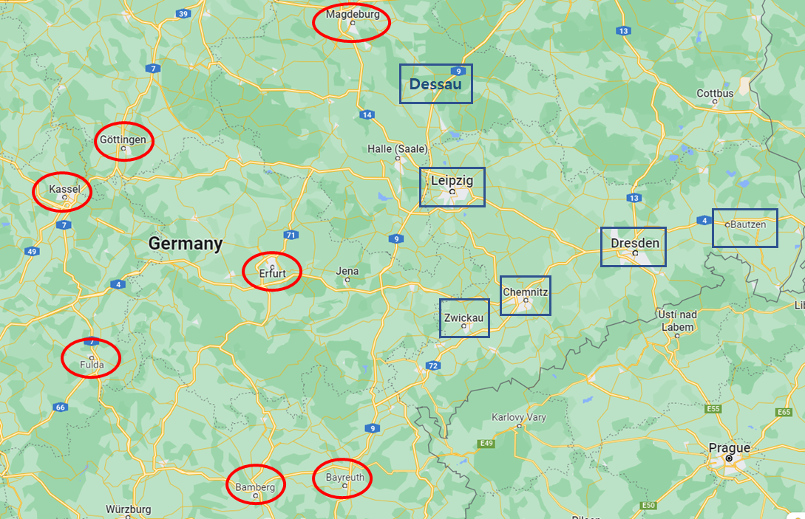

잘러 (Saale) 강 뒤에서 - 나폴레옹의 고민
게시: 2022-08-01T06:30:32+09:00
샤른호스트가 '과연 나폴레옹이 어느 쪽 길로 쳐들어올 것인가'에 대해 골머리를 앓는 동안, 나폴레옹은 4월 13일 조용히 자신의 출정을 자신의 장인 어른인 오스트리아 황제 프란츠 1세에게 편지로 알렸습니다. 이 편지에서 나폴레옹은 원래 1주일 뒤에나 출발할 예정이었으나 적군이 엘베 강 서안까지 넘어왔다는 이야기에 가만히 있을 수 없어 계획보다 출정을 앞당긴다고 담담히 밝혔습니다. 그러면서 자신은 2~3일 뒤에 마인츠(Mainz)에 도착할 것이라는 사실까지 통보했습니다. 나폴레옹 본인의 출정은 굉장한 기밀 정보였습니다. 그런데 그걸 편지에 공공연하게 써서 어느 쪽에 붙을지 모르는 오스트리아 궁정에 보내는 행동은 무엇을 뜻하는 것이었을까요? 혹시 나폴레옹은 그 특유의 자아도취 때문에 이제 처가댁이 된 오스트리아 합스부르크 왕가가 당연히 자기 편이 되어줄 것이라고 순진하게 믿었던 것일까요? 나폴레옹이 아무리 중2병 환자였다고 하더라도 그 정도까지는 아니었습니다. 나폴레옹은 그의 막내동생 제롬의 장인인 뷔르템베르크 국왕 프리드리히 1세 (Friedrich I)에게 보내는 편지에서 오스트리아가 취하고 있는 애매한 입장에 대해 아래와 같이 꽤 냉철하게 분석하고 있었습니다.
"모든 요소들을 종합하여 판단할 때, 오스트리아는 이번 전쟁에서 중립을 고수할 것이오. 하지만 만약 오스트리아가 내게 선전포고를 한다면 그건 여러가지 전쟁 준비에 걸릴 시간을 생각하면 7월 경이 될 터인데, 그때가 되면 나도 오스트리아가 저쪽편에 붙는 것 쯤은 감당할 준비가 되어 있을 것이오."

(뷔르템베르크 국왕 프리드리히 1세입니다. 키가 2m 2cm로서 지금도 큰 키이지만 당시엔 정말 거인에 가까왔던 이 양반은 거인일 뿐만 아니라, 무척 미화되기 마련인 초상화에서조차도 보이듯이 엄청난 비만인이었습니다. 그래서 나폴레옹도 이 양반에 대해 '인간의 가죽이 찢어지지 않고 얼마나 늘어날 수 있는지 신께서 테스트해보기 위해 만드신 인간'이라고 농담을 하기도 했습니다. 그런 것과 상관없이, 이 양반은 결혼으로 투자를 하는 유럽 왕실의 전형적인 모습을 보여준 분으로서, 그의 왕비는 영국왕 조지 3세의 장녀인 샬럿(Charlotte)이었고 이 양반의 여동생인 소피 도로테아 (Sophie Dorothea)는 바로 러시아의 전임 짜르 파벨 1세의 황후이자 현 짜르 알렉산드르의 친엄마였습니다. 그런 인척관계 덕분에 그는 나폴레옹의 1급 동맹이었음에도 불구하고 나폴레옹 몰락 이후 빈 회의에서도 살아남아 뷔르템베르크 국왕직을 유지할 수 있었습니다.) 나폴레옹이 자신의 출정에 대해 오스트리아에게 통보한 것은 자신이 직접 출정하니 경거망동하지 말고 중립을 고수하라는 경고이기도 했고, 또 어차피 프로이센-러시아 연합군의 정보망이면 자신의 출정 일자 정도는 쉽게 알아낼 것이라고 판단했기 때문이었습니다. 실제로 코부르크(Coburg), 에르푸르트, 마이닝겐(Meiningen) 등 프랑스에 협조하는 라인 연방국가들의 주요 도시에는 프로이센에게 협력하는 스파이들이 넘쳐나고 있었고, 이런 도시들에 있는 카페에서는 프랑스군 장교들이 별 조심도 하지 않고 몇 군단 소속 무슨 사단이 어느 장군의 지휘 하에 어느 방향으로 언제 출발했다더라 하는 이야기를 잡담처럼 떠들어대고 있었습니다. 그래서 샤른호스트와 그나이제나우는 나폴레옹이 4월 14일 마인츠에 도착했다는 소식까지 정확하게, 그것도 여러 명의 스파이들로부터 듣고 있었습니다. 뿐만 아니라 러시아군이 데려온 코삭 기병들은 여기서도 그 유용함을 십분 발휘하고 있었습니다. 여기저기서 소규모로 활동하던 코삭들은 라인 연방 꽤 깊숙한 지역까지 제멋대로 들어가, 방심하고 지나가던 프랑스군 전령들을 쓰러뜨리고는 그 전통문을 탈취해왔습니다. 프랑스군으로서는 이런 소규모 코삭 기병대에 대해 속수무책이었습니다. 이들을 막기 위해서는 경기병들이 필요했는데, 여기서도 지난 러시아 원정 때 기병대가 궤멸된 것이 큰 문제로 작용했습니다. 이렇게 탈취한 프랑스군 전통문을 통해 프로이센-러시아 연합군은 나폴레옹의 군단들이 어떻게 움직이고 있는지 훤히 들여다 볼 수 있었습니다. 문제는 연합군과는 달리, 나폴레옹은 적군의 정황에 대해 아무런 정보를 얻지 못하고 있다는 점이었습니다. 그나마 잘러 강에 가장 가깝게 접근한 것이 에르푸르트에 입성한 네 원수였는데, 그가 보내오는 보고서에서도 잘러 강 동쪽에 있는 적진에 대한 정보는 아무것도 없었습니다. 나폴레옹 곁에 앉아서 전방의 장군들에게 잔소리를 해대던 참모장 베르티에는 네 원수에게 편지를 보내 적의 배치와 움직임에 대해 정찰을 하고 보고서를 올리라고 독촉했고, 그에 따라 네도 궁시렁거리며 4월 22일 3개 대대를 파견했습니다. 그러나 결국 알아낸 것은 거의 없었습니다. 애초에 보병 대대를 보내어 적의 정황을 염탐한다는 것이 어불성설이었습니다. 이런 심각한 정보의 비대칭 상황 속에서도 나폴레옹의 마인 방면군은 착착 잘러(Saale) 강 서안에 집결하고 있었습니다. 네의 제3 군단은 4월 24일 잘러 강변의 바이마르(Weimar)에 도착했고 뒤이어 나폴레옹의 근위대도 도착했습니다. 더 서쪽인 고타(Goth) 서쪽에는 마르몽의 제6 군단이 펼쳐져 있었고, 바이마르 남쪽에는 베르트랑의 제4 군단이 그라펜탈(Gräfenthal)과 코부르크(Corburg), 안스바흐(Ansbach) 등에 도착했습니다. 이렇게 잘러 강변에 늘어서기 시작한 마인 방면군의 최남단은 바이로이트(Bayreuth)에 도착한 우디노의 제12 군단의 일부가 맡고 있었는데, 여기는 프로이센군이 주둔한 츠비카우(Zwickau)에서 남서쪽으로 80km 밖에 떨어지지 않은 곳이었습니다. 그리고 외젠 휘하의 엘베 방면군 2만은 하르츠(Harz) 고산지대와 할러(Halle) 사이에 펼쳐져 있었습니다.

(잘러 강은 바이에른에서 시작되어 데사우와 마그데부르크 사이에서 엘베 강과 합쳐지는 엘베 강의 지류입니다. 엘베 강에 비하면 좁은 강이지만 나름대로 수량이 많고 깊어 배가 운항할 수 있는 강입니다. 총 길이는 대략 410km 정도로서 서울에서 부산까지의 거리보다 훨씬 더 멉니다.)

(하르츠 고산지대는 평야 위주인 북부 독일에서 보기 드문 산악지대로서, 군사적으로는 방벽 역할을 하는 지형입니다. 하르츠(Harz)라는 말 자체가 중부 고지대 독일어로 삼림 언덕을 뜻하는 Hardt에서 나왔다고 합니다. 최고봉은 해발 1141m인 브로켄(Brocken) 산이니까, 최고봉인 백운대가 해발 836m인 북한산보다 더 높습니다.)

(4월 중순 경 양측의 대치 상황입니다. 나폴레옹측은 붉은 원으로, 연합군측은 파란색 사각형으로 표시했습니다. 참고로 잘러 강은 할러(Haale), 나움부르크(Naumburg), 예나(Jena) 등의 도시를 끼고 있습니다. 그리고 괴팅겐과 마그데부르크 사이의 녹지가 바로 하르츠 고산지대입니다.) 그런데 정작 나폴레옹은 잘러 강을 넘지 않았습니다. 마치 러시아군에게 절대 엘스터 강을 넘지말라고 했던 쿠투조프의 지시를 나폴레옹이 지키는 것 같았습니다. 당시 블뤼허의 군과 비트겐슈타인의 군은 아직 합류하지 못한 상황이었고, 후방에서 뒤늦게 출발한 밀로라도비치의 러시아 중앙군 선봉도 드레스덴에 간신히 도착한 상황이었습니다. 토르마소프의 중앙군 본대는 훨씬 늦은 상태였고요. 즉, 아직 프로이센-러시아군은 분산된 상황이었으므로 나폴레옹이 가장 좋아하는 각개격파가 가능한 상황이었습니다. 그런데 왜 나폴레옹은 머뭇거리고 있었을까요? 연합군의 본대가 아직 엘베 강을 넘지 못한 상황이라는 것을 몰랐기 때문이었을까요? 딱히 그건 아니었습니다. 나폴레옹도 나름대로 정보를 수집하고 있었으므로, 당장 지도 상에 각각의 적 사단의 위치를 그릴 정도의 정보는 없다고 해도, 최소한 쿠투조프의 러시아군 본대는 엘베 강 동쪽에 있다는 것은 알고 있었습니다. 그리고 비트겐슈타인의 부대와 접촉을 유지하고 있던 외젠의 보고를 통해서, 비트겐슈타인의 군은 엘베 강을 건넜으나 아직 데사우(Dessau) 일대에 자리잡고 있다는 것도 알고 있었습니다. 즉, 라이프치히의 블뤼허 군과는 분산되어 있는 상태라는 것을 알고 있었습니다. 그 결과, 간단히 산수를 해보면 네와 외젠의 병력만 합해도 비트겐슈타인과 블뤼허의 병력을 합한 것보다 더 많았습니다. 그런데 나폴레옹답지 않게 강변을 방어선 삼아 머뭇거리기만 했을까요? 나폴레옹도 사람이었기 때문이었습니다. 특히 나폴레옹은 성공만을 누려오다 불과 몇 개월전 상상하기 힘들 정도의 대실패를 겪은 사람이었습니다. 당연히 움츠러들 수 밖에 없었습니다. 게다가 그의 마인 방면군은 좋게 말해 20만 대군이었지만 좀더 냉정하게 이야기하면 신병들에게 급히 만든 군복을 입히고 총을 쥐어준 오합지졸에 불과했습니다. 첫 총성이 울리고 대포알이 이들의 대오를 피의 안개를 일으키며 찢어놓을 때 이 신병들이 어떻게 움직일지는 아무도 몰랐습니다. 무엇보다, 프랑스군은 기병대가 심각할 정도로 부족했습니다. 위에서 언급한 나폴레옹이 뷔르템베르크 국왕 프리드리히 1세에게 보낸 편지에서도, 1만5천의 기병대만 있었다면 이번 전쟁을 신속하게 마무리지을 수 있을 것이라며 아쉬워하는 마음을 적을 정도였습니다. 기병대가 거의 없다보니, 전투에서 어렵게 이긴다고 해도, 도망치는 적을 추격해 분쇄할 수가 없었으므로 전과 확대를 기대하기 어려웠습니다. 이런 이유 때문에, 단지 프랑스군의 숫자가 더 많다는 것만으로는 이번 원정의 성공을 장담하기가 어려웠습니다. 나폴레옹은 적에게 이기는 것만으로는 부족했고, 반드시 적을 압도해야 한다고 생각했습니다. 그러기 위해서는 20만 대군이 한꺼번에 잘러 강을 넘어야 했습니다. 그리고 아무리 잘러 강이 지류에 불과하고 코삭 기병이 넘지 못할 강은 없다고 하더라도, 분명히 잘러 강은 적의 정찰로부터 프랑스군의 움직임을 어느 정도 가려주는 경계선 역할은 해주었습니다. 전투와 전쟁에는 인간의 심리가 큰 역할을 하는데, 베일 속에 가려졌던 나폴레옹의 마인 방면군이 무시무시한 첫인상을 주는 것이 중요했고, 그러자면 잘러 강 서안에서 모든 준비를 마친 뒤에 한꺼번에 봇물이 터져나가듯 진격을 시작하는 것이 좋다고 나폴레옹은 판단했습니다. 그래야 귀찮은 모기떼 같은 코삭 기병들도 전의를 상실하고 물러설 것이고, 믿을 수 없는 처가집인 오스트리아도 사위를 배신할 생각을 하지 못할 것이기 때문이었습니다. 나폴레옹이 이런 궁리를 하는 사이, 프로이센군 수뇌부는 나폴레옹이 주력 부대를 이끌고 잘러 강 서쪽에 나타난 것을 알고 드디어 올 것이 왔다는 반응을 보였습니다. 그런데, 그 반응은 결코 두려움이 아니었습니다. Source : The Life of Napoleon Bonaparte, by William Milligan Sloane Napoleon and the Struggle for Germany, by Leggiere, Michael V
https://en.wikipedia.org/wiki/Frederick_I_of_W%C3%BCrttemberg https://en.wikipedia.org/wiki/Harz https://en.wikipedia.org/wiki/Saale